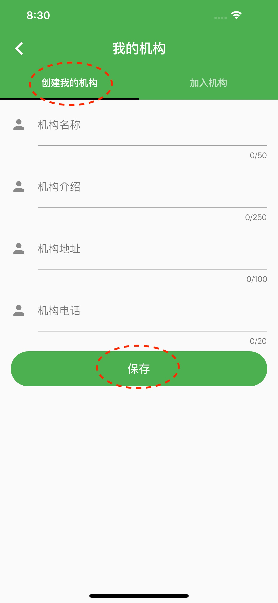
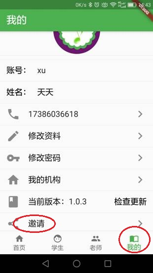
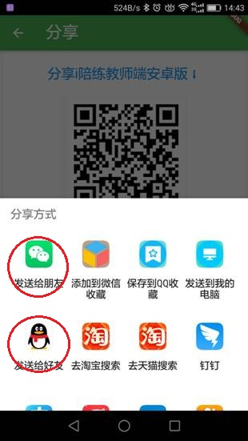
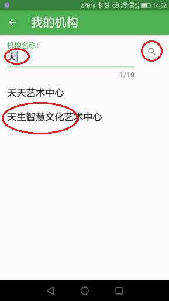
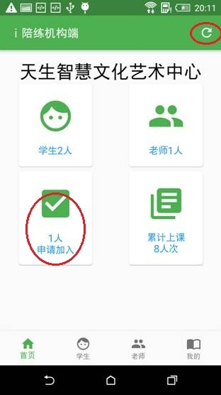
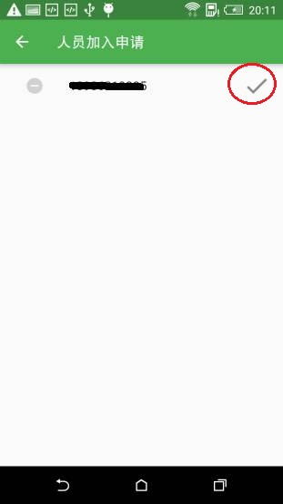
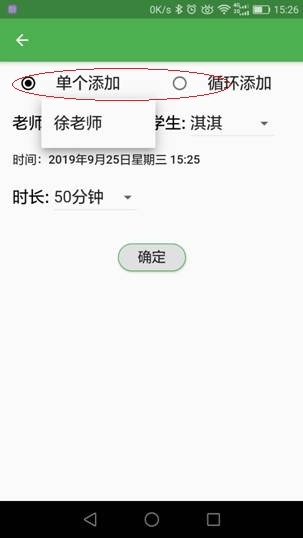
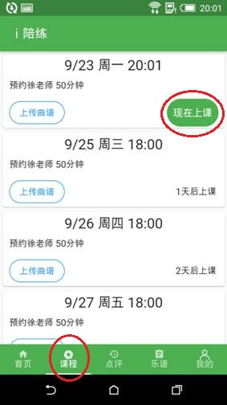
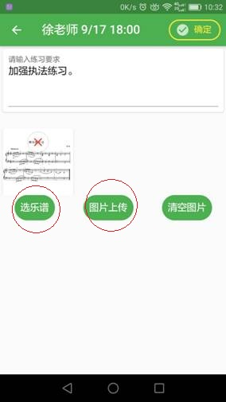

乐器老师视频陪练好帮手
i 陪练是一款全新上线的一对一乐器视频教学及陪练平台。专为乐器培训学校、琴行和个人乐器老师量身打造，通过 i 陪练远程视频上课，学生在家练琴，老师远程指导，学生的练琴效果提高了，家长满意了，回课质量也提高了，时间节省了，收入增加了。真正做到学生、家长、老师都满意。
面向三大客户群，平台优势如下：
如果您是琴行或培训学校老板，用 i 陪练。
1、学生练琴再也不用去琴行排队等了。
2、您不用买钢琴、租教室、搞装修，现成的学生资源充分利用，真正0投入。
3、琴行有了自己的陪练平台，又多了一块招生宣传的利器。
4、入驻平台我们还能帮您免费宣传。
如果您是在线兼职陪练老师，用 i 陪练。
1、您的资料将会推荐给平台注册的琴行和培训学校，将您的资料与最适合的学生匹配。
2、我们的学生全部来自实体琴行和培训学校，生源、课时有保障，足不出户兼职赚钱。
3、 i 陪练支持视频上课、曲谱上传、曲谱划线、课后点评、教师分享。
如果您是个人家教老师，用 i 陪练。
1、可向家长推荐视频陪练课，每周一节主课再配三到四节陪练课，主课、陪练两不误。之前跑家里给学生上课一晚上只能上一节课，在家远程视频指导，同样时长可以给3到4个学生上课，节省来回路上花费的时间。
2、主课和陪练都由一个老师担任，主课老师远程监督，学生练琴更积极，家长更放心。
3、您可在平台创建属于自己的虚拟机构（机构才有排课功能），陪练课时长自己定，自己排课自己收学费。
陪练课轻松上，收入轻松涨！
内侧阶段、前800名机构用户，注册就送300元，赶快下载 i 陪练APP吧！！！
1、管理员下载" i 陪练-机构端", 使用手机验证码登录。
2、登录之后创建我的机构，输入机构信息，保存
|  |
在 i 陪练机构端底部导航栏点击“我的”-“邀请”，让教师和学生扫二维码或者通过微信QQ等分享下载链接给教师和学生， 教师和学生下载对应的App，用手机号验证码登录。
|  |  |
教师和学生登录对应的APP后自动进入“我的机构”界面，输入机构名称，点查询，选择加入刚刚创建的机构。
|  |
管理人员在" i 陪练机构端APP"右上角点“刷新”，可以看到有教师和学员申请加入，点击“申请加入”，通过人员加入申请。
|  |  |
管理员进入“ i 陪练机构端”，点击导航栏底部“学生”菜单进入学生列表，给学生排课，可添加单节课程，也可按周循环添加多节课程。
|  |
1.学生进入“ i 陪练学生端”，点击底部导航栏的“课程”菜单，在课程列表中选择要上的课，点击“上传曲谱”，可在曲谱库中选择乐谱，也可选择照片或拍照上传，同时可输入上课要求。
|  |  |
2.距离上课时间5分钟内可以打开视频，教师和学生可调整手机位置、音量大小等准备工作。
3.上课时教师可以打开曲谱，进行划线、撤销、翻页等操作。
4.距离陪练时间结束5分钟前系统开始倒计时提示，超过一分钟后视频关闭。
5、课后教师对学生练习表现进行点评，学生家长代学生对老师进行评价。
附注：机构如何向学员推荐线上陪练
邀请学生和教师下载app并加入机构。
安排学生体验线上陪练课，了解流程，体验效果。
正式安排线上陪练。
天生智慧(武汉)科技有限公司